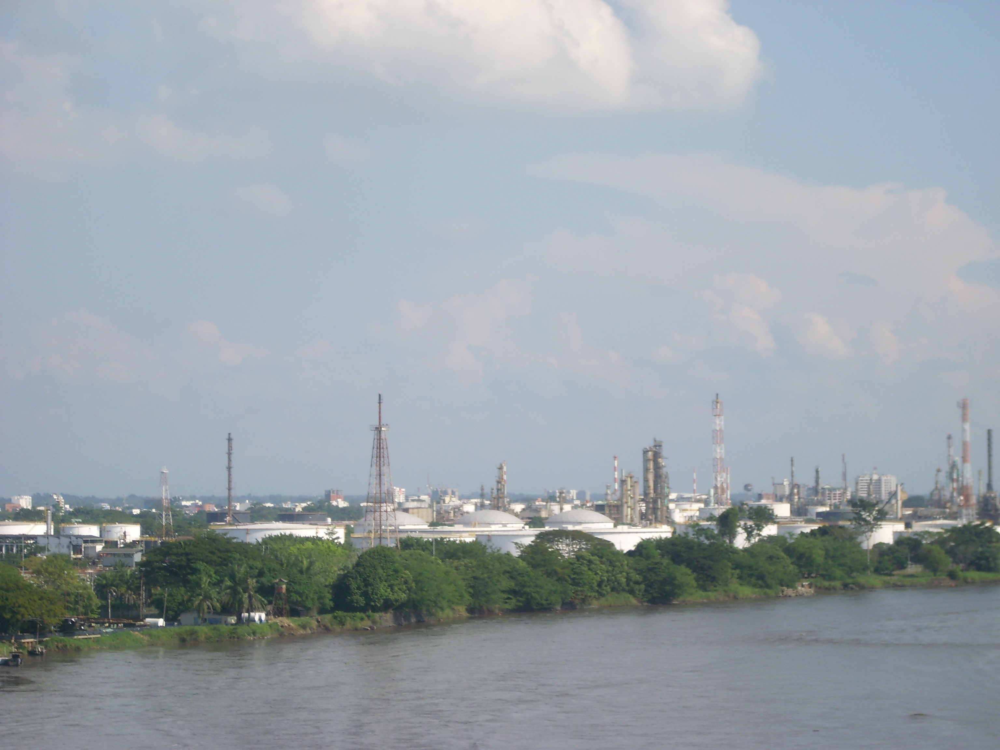
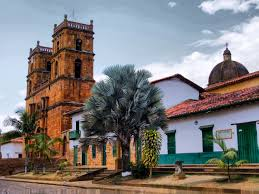
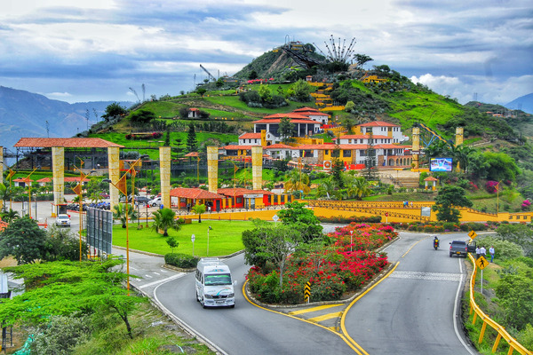
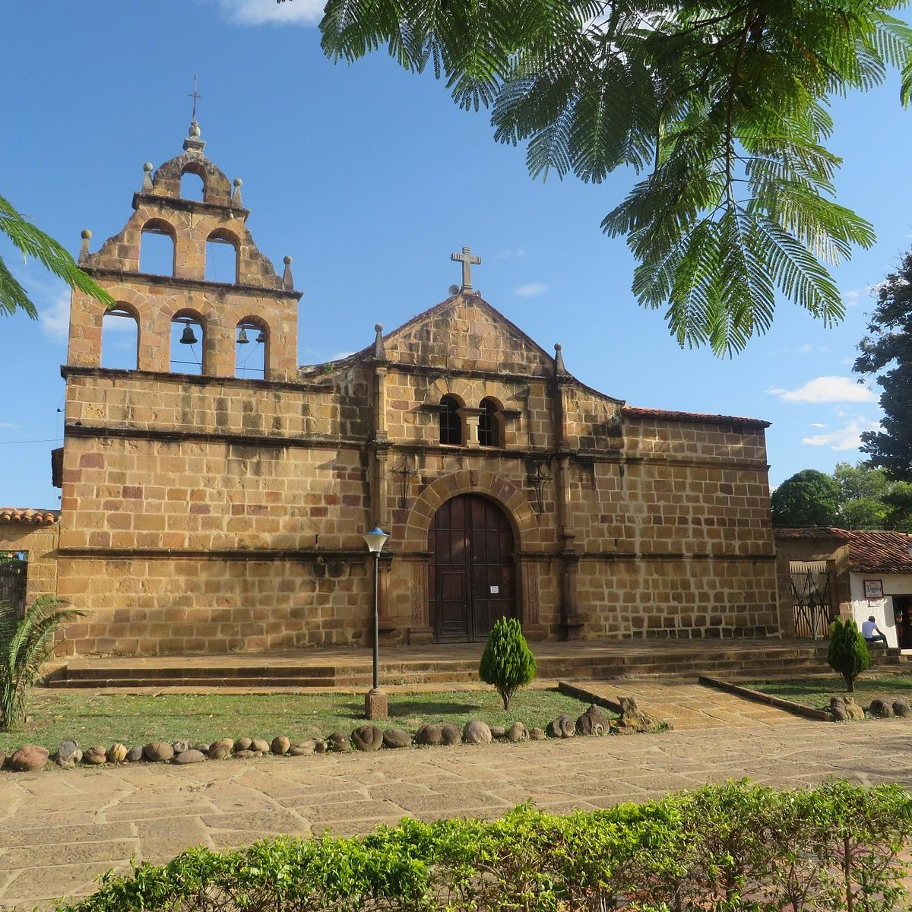

Turismo
Santander, en el norte de Colombia, es un destino turístico fascinante que ofrece una mezcla de hermosos paisajes naturales, historia, cultura y actividades de aventura. Aquí tienes algunas de las principales atracciones turísticas que puedes disfrutar en Santander:
1. Barrancabermeja

- Puerto Petrolero: Barrancabermeja es conocida como la "capital petrolera de Colombia" y cuenta con el puerto petrolero más importante del país. Aquí se puede aprender sobre la industria del petróleo.
- Río Magdalena: El río ofrece oportunidades para paseos en bote y disfrutar del paisaje.
- Cerro de la Cruz: Un excelente mirador para vistas panorámicas de la ciudad y sus alrededores.
2. San Gil

- Capital del Turismo de Aventura: San Gil es famosa por sus actividades extremas como el rafting, parapente, espeleología y senderismo.
- Parque El Gallineral: Un parque natural con árboles cubiertos de musgo y hermosos senderos para caminar.
- Cueva de la Vaca: Un lugar ideal para los amantes de la espeleología.
3. Barichara

- Pueblo de Piedras Blancas: Este es un pintoresco pueblo colonial, considerado uno de los más bonitos de Colombia, con calles empedradas y arquitectura tradicional.
- Camino Real: Una antigua ruta de los indígenas guanes que conecta Barichara con Guane, perfecta para hacer caminatas y disfrutar del paisaje.
- Iglesia de Santa Bárbara: Una iglesia histórica ubicada en la plaza principal del pueblo.
4. Parque Nacional de Chicamocha

- Chicamocha Canyon: Uno de los cañones más impresionantes de Colombia, ideal para quienes buscan paisajes espectaculares.
- Teleférico: Puedes tomar el teleférico para disfrutar de las vistas panorámicas del cañón.
- Paseo de los Dineros: Un museo interactivo que ofrece una visión de la historia geológica y cultural de la región.
5. Guane

- Pueblo Histórico: Un pequeño pueblo que es ideal para quienes buscan un lugar tranquilo y lleno de historia, con arquitectura colonial y vistas panorámicas.
- Museo Arqueológico: Aquí puedes conocer más sobre la historia de los pueblos indígenas de la región.
Actividades adicionales:
- Rafting en el río Fonce (San Gil) o en el río Suárez.
- Senderismo en diferentes parques naturales y áreas protegidas.
- Ciclismo de montaña en la región de Chicamocha y la Mesa de los Santos.